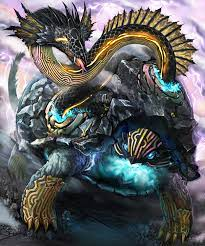
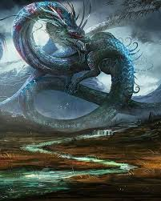
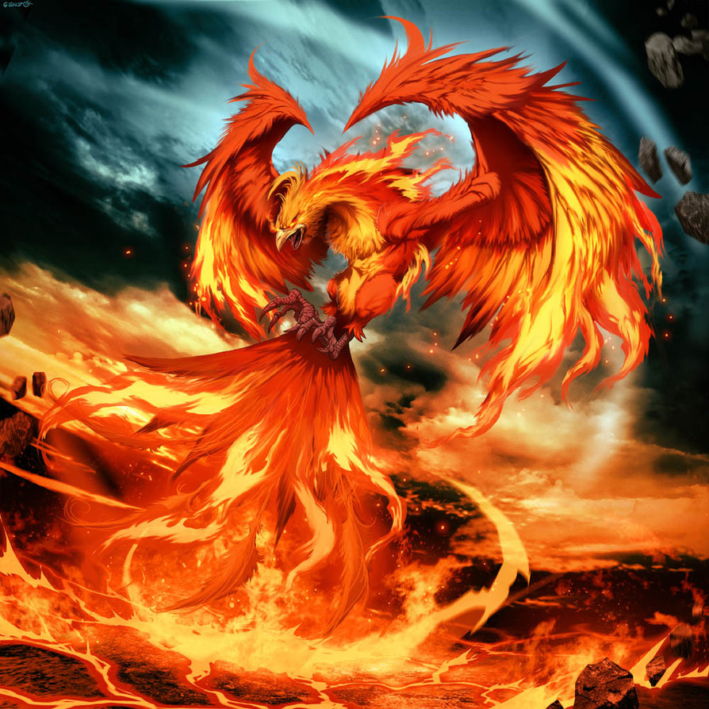
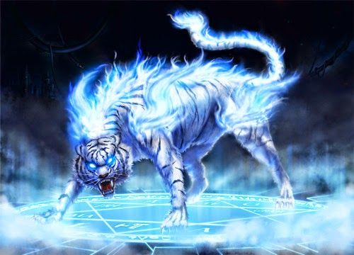

De acordo com lenda, os quatro guardiões dos pontos cardeais do Japão são bestas com poderes divinos que protegem o país e estão associados a elementos e estações do ano.
Embora pertençam a tradição milenar do Japão, atualmente os guardiões foram incorporados na cultura pop do país.
Alguns deles estão presentes em animes e jogos. Seja como bestas ou com personagens de mesmo nome e aspectos semelhantes.
É possível encontrar personagens nos animes Bleach, Yu Yu Hakusho, Fushigi Yugi, Cavaleiros do Zodíaco e em games como Final Fantasy XI.
Genbu
Genbu é o guardião do Norte representado por uma tartaruga gigante envolta por uma serpente. Seu elemento é a água e está associada ao inverno japonês.
Originalmente a tartaruga gigante possuía a cor preta, porém ela pode ser representada com cores mais nobres e claras.
De acordo com a tradição, a parte norte do Palácio Imperial de Kyoto é reservada a Genbu, símbolo da purificação, longevidade, versatilidade e inteligência.
Além disso, é conhecida como o Imperador Escuro do Céu e Mercúrio é considerado seu planeta.
Seiryu
O guardião do leste do Japão é representado por um dragão azul. Em algumas lendas e tradições japonesas Seiryu liderava os quatro guardiões.
No templo budista Kiyoumizu-dera em Kyoto, é possível ver uma estátua do guardião do leste na entrada e todos os anos acontecem festivais em sua homenagem.
Além de estar associado nas cores azul e verde e ao elemento madeira, Seiryu controla a chuva e representa autoridade, luxúria, força absoluta, criatividade e agressividade.
Seu planeta é Júpiter e a estação a primavera.
Suzako
O símbolo da fidelidade, bondade, nobreza e a força de vontade, Suzako, é o guardião do sul e considerado por alguns como a figura mais sagrada dos quatro.
Sua representação pode ser associada ao da mitológica ave ocidental Fênix. Naturalmente seu elemento é o fogo e sua estação é o verão.
As antigas capitais japonesas de Fujiwara, Heijo e Heiam possuíam o Suzakumon, muros ao sul com inscrições de Suzako para proteção. Atualmente não é mais possível vê-las.
O planeta associado a Suzako é marte e sua cor é a vermelha.
Byakko
O Tigre Branco Celestial, Byakko é o guardião do oeste. Seu elemento é o metal, controla os ventos e o outono.
De acordo com a lenda, o princípio do Tigre Branco Celestial é proteger e preservar. Por isso, era comum encontrar shoguns, generais e pessoas de poder e influência japoneses utilizarem um brasão com um tigre.
Inclusive, em Nara foram encontrados túmulos de nobres e guerreiros com brasões de Byakko. O guardião do oeste é símbolo da retidão, bravura e justiça, seu planeta é Vênus.
Os quatro guardiões dos pontos cardeais do Japão podem ser considerados Yokai por se tratarem de espíritos.
Porém, diferente dos espíritos malignos, Genbu, Seiryu, Suzako e Byakko são grandes protetores do Japão e de sua população.
Gostou do artigo? Não deixe de se inscrever na nossa Newsletter.
Clique aqui voltar ao inicio